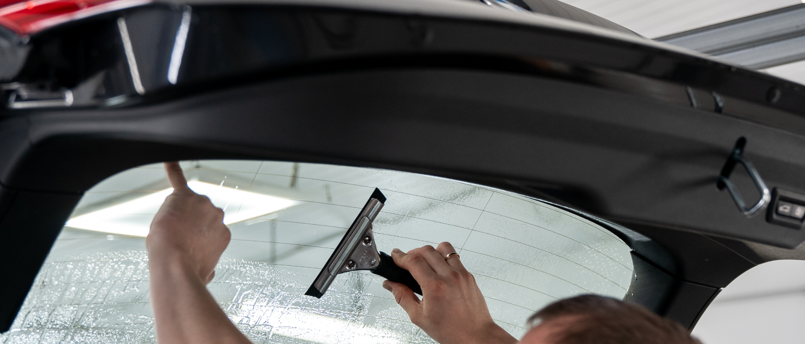
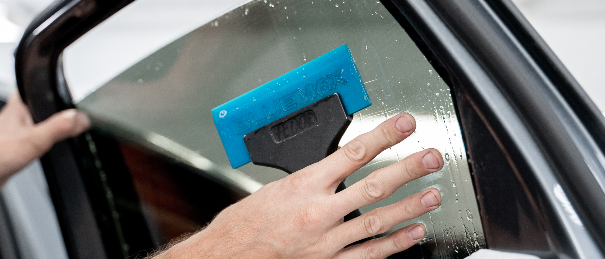
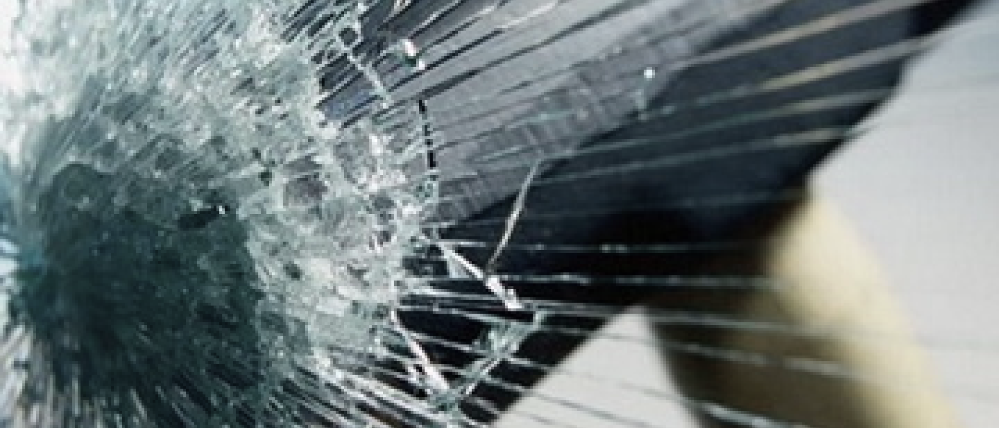

Тонировка стёкол


Обеспечьте дополнительную безопасность автомобилю с помощью тонировки стекол и получите мойку в подарок
Преимущества тонировки
Виды тонировочных пленок
атермальная
Прозрачная пленка для защиты салона от выгорания, разрешена ГОСТом
тонирующая
Темная пленка для защиты салона от солнечных лучей и посторонних глаз
бронирующая
Прозрачная пленка для защиты пассажиров от осколков стекла при аварии и для предотвращения проникновения. Бронированное стекло противостоит ударам кулаками, ногами, камнями и палками.
Этапы оклейки
Приём автомобиля
Подготовка пленки
Установка пленки
Выдача автомобиля клиенту
Результаты
Стоимость евротонировки
Малый класс

ДЛИНА: 3,6 — 3,9 м
ШИРИНА: 1,5 — 1,7 м
от 3 500 ₽
Первый класс или гольф класс

ДЛИНА: 3,9 — 4,4 м
ШИРИНА: 1,6 — 1,75 м
от 4 000 ₽
Второй средний класс

ДЛИНА: 4,4 — 4,8 м
ШИРИНА: 1,7 — 1,8 м
от 4 500 ₽
Бизнес-класс

ДЛИНА: > 4,8 м
ШИРИНА: > 1,8 м
от 5 500 ₽
Представительский класс

ДЛИНА: > 5 м
ШИРИНА: > 1,8 м
от 7 000 ₽
Таблица с ценами
Возможна поэлементная оклейка тонирующей пленкой от 200 ₽
Со стоимостью вы можете
Бренды тонировочных пленок
Наши преимущества

Более 20.000 довольных клиентов за 8 лет работы

Территория охраняется 24/7, вход в боксы по специальным ключам

Официальная гарантия 1 год на все работы

Чистые и отапливаемые боксы с оборудованием

Проверенные временем и климатом материалы

Сервис в самом центре Петербурга
Оставьте заявку на бесплатную консультацию, и мы перезвоним вам в течение 2х минут
* Если заявка пришла после 9 вечера — перезвоним в 10 утра на следующий день